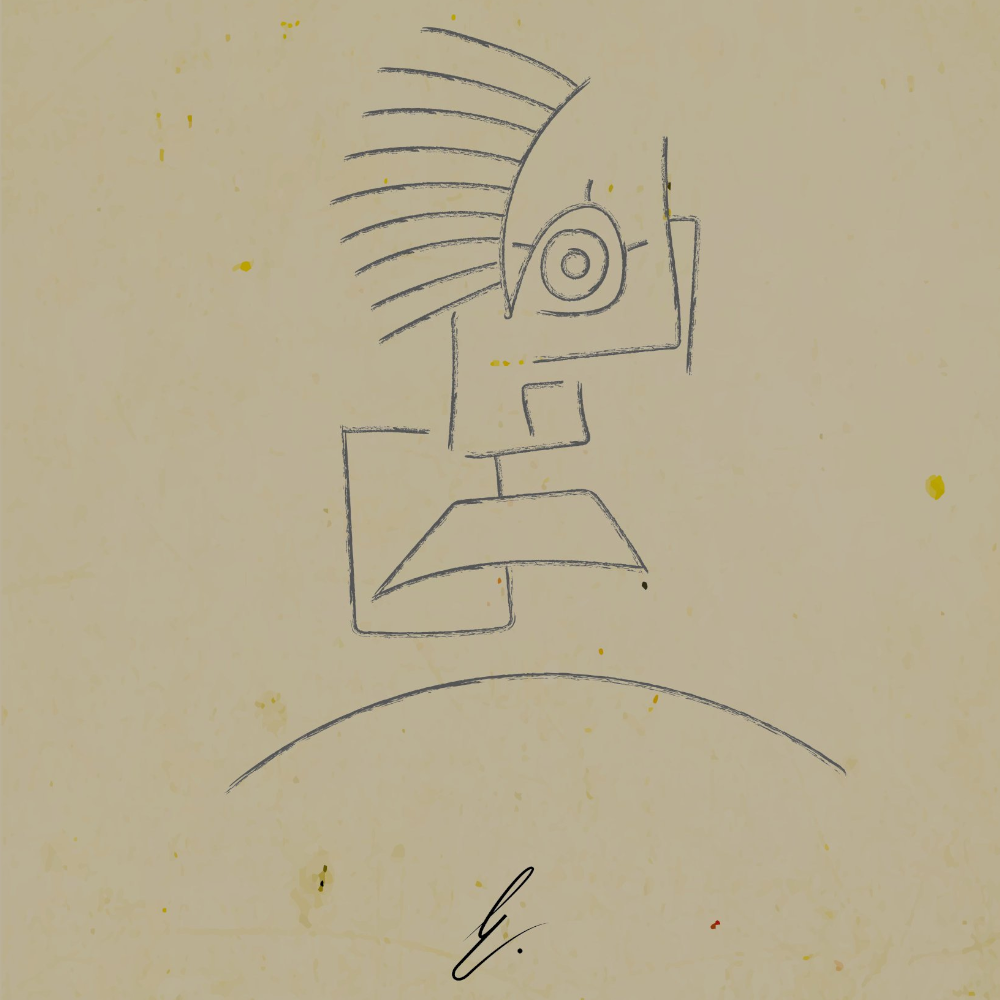

Facility of E (F.o.E)
 With a background in both Crypto & Digital Art, facility of E (F.o.E) is a 1/1 blockchain Artist, Exhibiting in the Metaverse for over a year now.Based in Southern Africa, with qualifications in Visual communication and Graphic Design via tertiary schooling in the United Kingdom, FoE, or more affectionately known as E, is one of the few 1/1 Artists pushing the possibilities of utility behind NFT Art and its place in the expanding Metaverse.
As a brand consultant by day, the need for high quality graphic work and illustration was apparent with many clients that E consulted for at the time.
Rather than outsource, Facility of E (FoE) was born on the social media platform, Instagram, with the intent of creating Art under the sudo anonymous identity for the sake and love of Art, without the influence of client expectation and monetary gain, and the intent to improve and expand E's, creative ability.
It was only with the Arrival of Covid-19, and the lockdowns that ensued, that lead to Experiment 939 (E939), an exhibition of 264 1/1 Artworks across 47 collections, created between 2018 & 2021, being launched as an NFT Art exhibition, and the 1st time any FoE's, would become available to the public.
Having entered the space in March 2021, FoE began minting E939 on the platform Opensea, and a Digital Art Journey began.